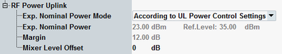

The following parameters configure the expected uplink power.

- "According to UL Power Control Settings"
The UL power is calculated automatically from the UL power control settings. The resulting expected nominal power is displayed for information. The displayed reference level is calculated as:
Reference Level = Expected Nominal Power + 12 dB Margin
For UL power control settings, see "Uplink Power Control". - "Manual"
In manual mode, the expected nominal power and a margin can be defined manually. The displayed reference level is calculated as:
Reference Level = Expected Nominal Power + Margin
The margin is used to account for the known variations (crest factor) of the RF input signal power.
Note: The actual input power at the connectors must be within the level range of the selected RF input connector; refer to the data sheet. If all power settings are configured correctly, the actual power equals the "Reference Level" minus the "External Attenuation (Input)" value.
Varies the input level of the mixer in the analyzer path. A negative offset reduces the mixer input level. A positive offset increases the level. Optimize the mixer input level according to the properties of the uplink signal.
Mixer level offset | Advantages | Possible shortcomings |
|---|---|---|
< 0 dB | Suppression of distortion (e.g. of the intermodulation products generated in the mixer) | Lower dynamic range (due to smaller signal-to-noise ratio) |
> 0 dB | High signal-to-noise ratio, higher dynamic range | Risk of intermodulation, smaller overdrive reserve |